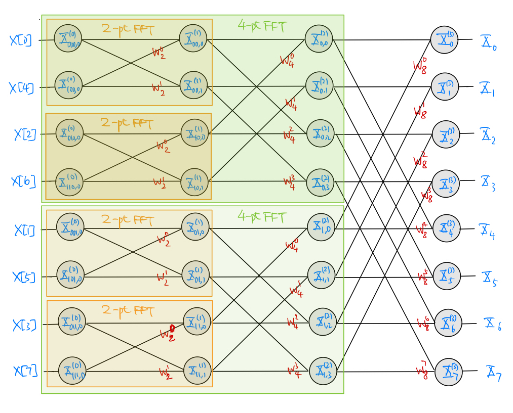
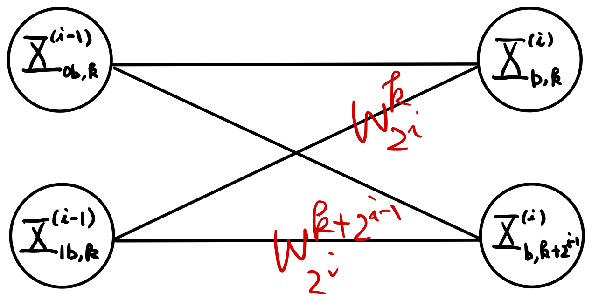
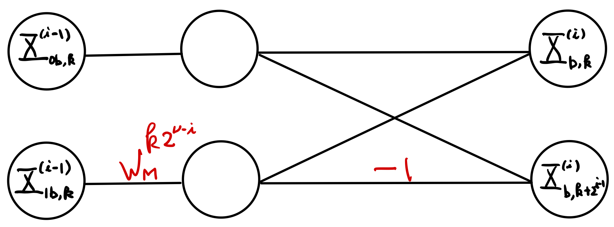
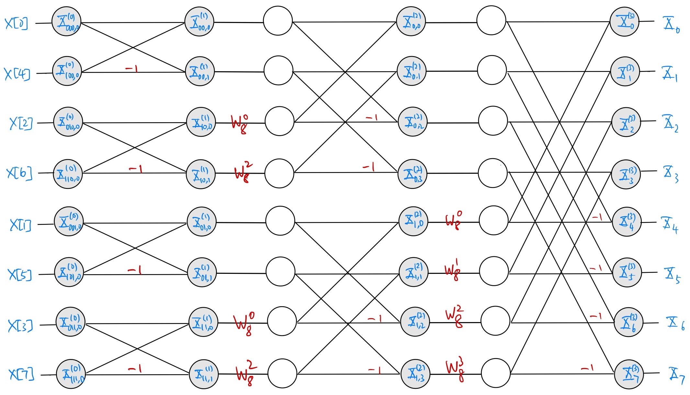
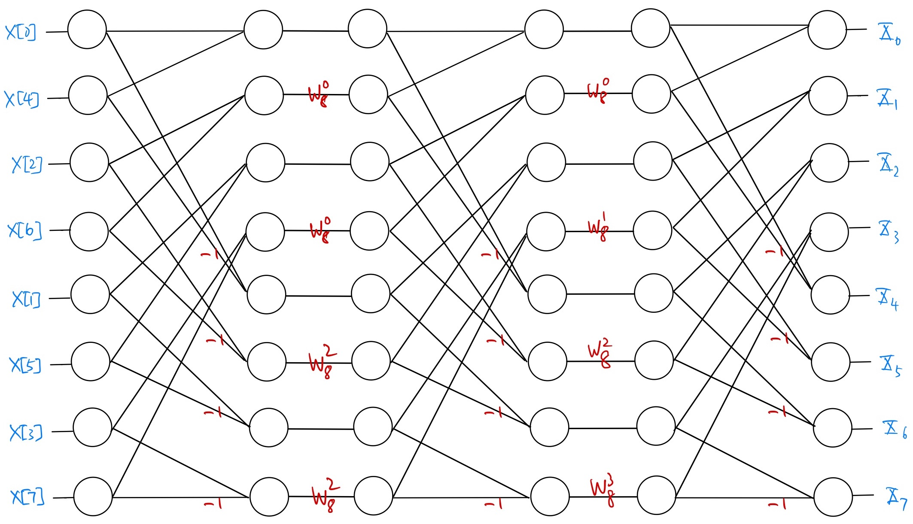

8.2. Butterfly Structures#
8.2.1. Radix-2 Decimation-in-Time Butterfly#
The radix-2 decimation-in-time FFT algorithm in (8.4)-(8.6) is perhaps more commonly described by the butterfly-structured SFG showing how to obtain the \(M\)-point DFT coefficients \(X_0, X_1, \ldots, X_{M-1}\) from the \(M\) signal samples \(x[n]\) for \(n=0,1,\ldots, M-1\).
For example, the figure below shows the decimation-in-time butterfly SFG for the case of \(M=2^3 = 8\) (\(\nu = 3\)):

Fig. 8.1 Eight-point radix-2 decimation-in-time FFT butterfly SFG#
The figure also shows calculation of the \(8\)-point FFT is decomposed into that of two \(4\)-point FFTs, each of which is further decomposed into that of two \(2\)-point FFTs recursively as described by (8.4)-(8.6).
We see from the butterfly SFG above that the input \(x[n]\) to the butterfly SFG is shuffled (decimated) according to the binary pattern \(b\) in the \(i=0\) stage. The bit reversal process (from MSB to LSB) provides a simple mnemonic to establish the order of shuffling.
Rewriting the IDFT formula (8.2) in the form below
\[\begin{equation*} M x[n] = \sum_{k=0}^{M-1} X_k (w^{kn}_M)^* \end{equation*}\]indicates that the same butterfly SFG above can be used to calculate IDFT if one replaces:
the butterfly input (still needs to shuffle the order) with \(X_k\),
the butterfly output with \(Mx[n]\), and
all gain factors with their respective complex conjugates.
{kind=link}
8.2.2. Modified Butterfly#
The butterfly SFG in Fig. 8.1 can be further modified to make it more conducive to implementation in the PL. To see how, let us get back to (8.5) which gives the following SFG for the basic butterfly element in Fig. 8.1:

The SFG implies that 2 complex-valued multiplications and 2 complex-valued additions are needed to implement this basic element.
However, it is easy to see that the computational requirement can actually be lowered by rewriting (8.5) using the “fraction-like” arithmetic of \(w^k_M\) as follows:
(8.7)#\[\begin{split}\begin{align} X^{(i)}_{b,k} & = X^{(i-1)}_{0b,k} + w^{k2^{\nu-i}}_{M} X^{(i-1)}_{1b,k} \\ X^{(i)}_{b,k+2^{i-1}} &= X^{(i-1)}_{0b,k} - w^{k2^{\nu-i}}_{M} X^{(i-1)}_{1b,k} \end{align}\end{split}\]for each \(i=\nu, \nu-1, \ldots, 1\), \(k=0,1,\ldots,2^{i-1} -1\), and each binary sequence \(b\) of length \(\nu-i\).
Expressing (8.7) as a SFG, we obtain the modified basic butterfly element as shown below:

Fig. 8.3 Modified basic 2-point butterfly element SFG in (8.7)#
The gain \(w^{k2^{\nu-i}}_{M}\) in Fig. 8.3 is often referred to as the twiddle factor. It is easy to see that implementation of the modified basic butterfly element requires only a single complex-valued multiplication, addition, and subtraction each.
Replacing each basic element in the 8-point butterfly SFG in Fig. 8.1 with the modified element in Fig. 8.3, we obtain the following modified 8-point butterfly SFG:

Fig. 8.4 Modified 8-point radix-2 decimation-in-time FFT butterfly SFG#
which is more conducive to PL implementation. Note that the first stage (\(i=0\)) does not require a gain layer because \(w^0_M = 1\) (or see (8.6)).
{kind=link}
{kind=link}
{kind=link}
8.2.3. Butterfly with Uniform Stages#
We observe, for example, from Fig. 8.4 that the stages in the modified butterfly SFG developed in Section 8.2.2 have different structures. This may be disadvantageous for implementation (see Section 8.3 for more discussions).
By rearranging the order of the vertices in the inner stages, we may redraw the modified butterfly SFG in Fig. 8.4 as below [OS10]:

Fig. 8.5 Modified 8-point radix-2 decimation-in-time FFT butterfly SFG with uniform stages#
The same reordering clearly extends to radix-2 decimation-in-time butterfly SFGs of any sizes.
Note that Fig. 8.5 amounts to a different way to draw the same modified butterfly SFG in Fig. 8.4. Nevertheless, when drawn as in Fig. 8.5, the stages in the modified butterfly SFG have the same structure. This may help implementing the SFG in HLS as discussed in Section 8.3 later.
{kind=link}